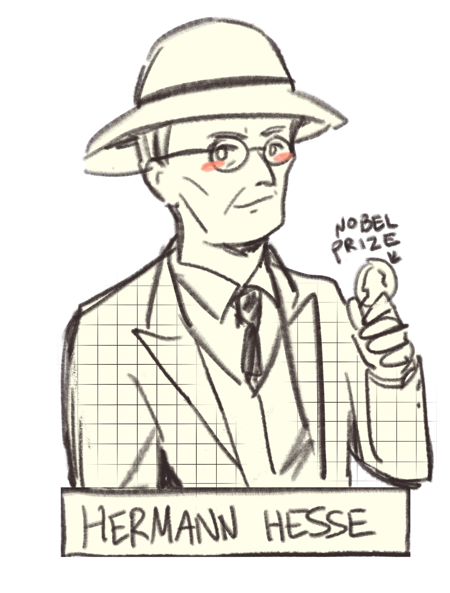
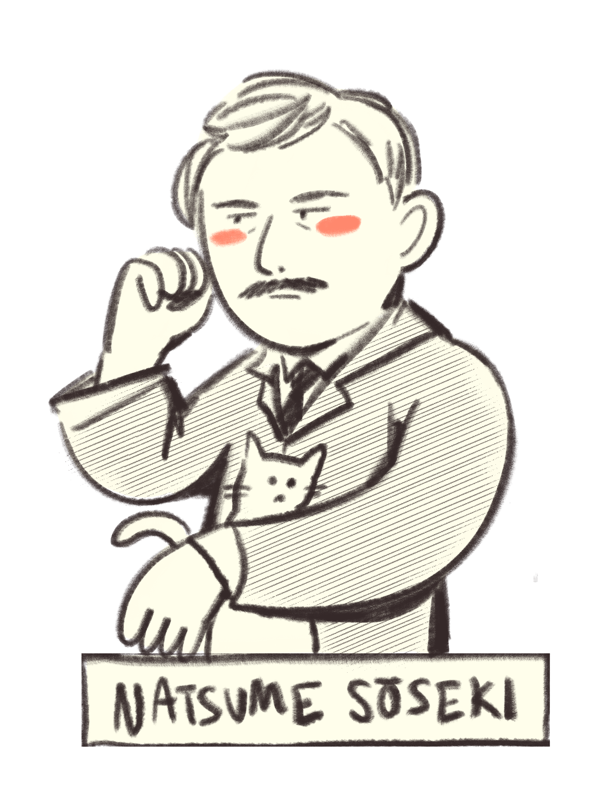
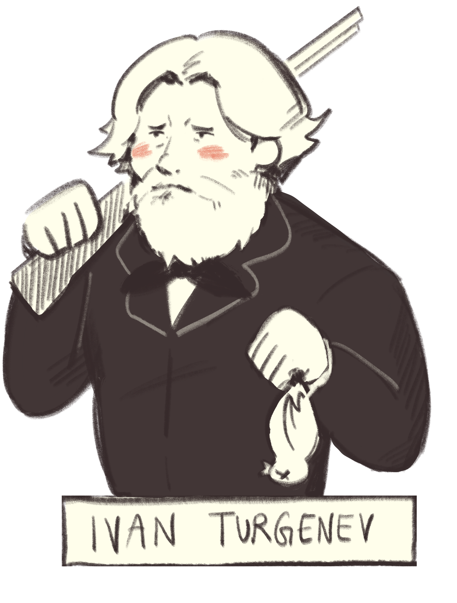

|  |  |  |
| Narcissus and Goldmund |
I like Soseki as a literary figure. |
A Sportsman's Sketches |
I drew these guys for my project from last semester, but not Kenji. I had these images saved on my computer. I wish I could display a Beyoncé shrine though
Back to Home